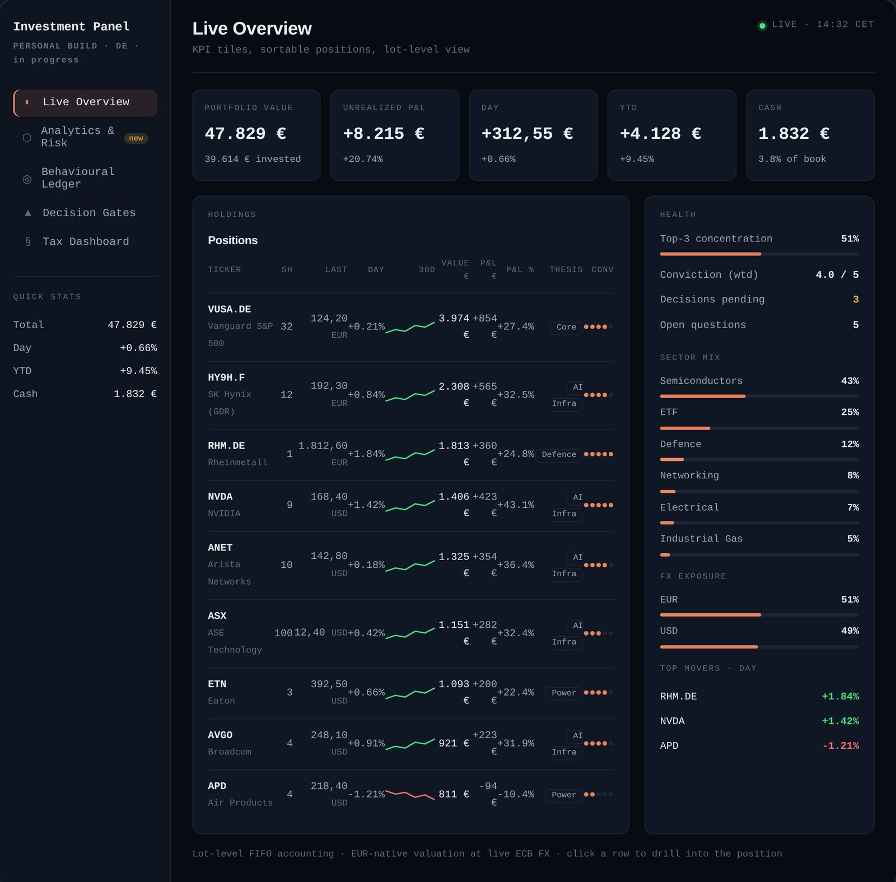
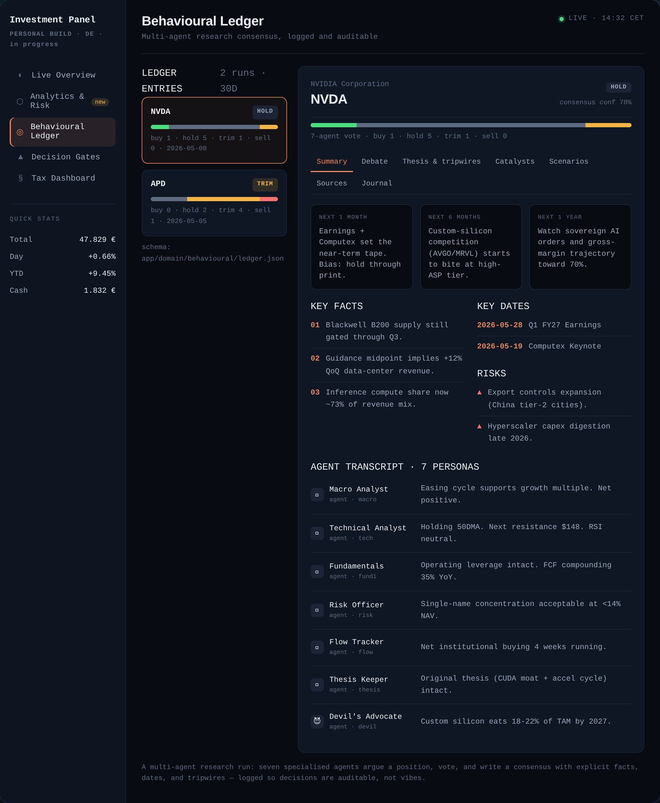

Projects
Two tracks. On one side, a personal platform where I push modern software practice and human-in-the-loop AI delivery as far as I can take them. On the other, production quantitative systems delivered for banks, insurers, and industrial clients during my time at Fraunhofer ITWM (client code is confidential, described by sector only).
Track A · Builder / applied AI
Greenfield, solo-built, and deliberately over-engineered to production standards as a proving ground. These are mine — open and linkable.

Live Overview · interactive preview Click to openA fully interactive, browser-native preview of the live dashboard — Live Overview, lot ledger, FX-aware performance, the German tax dashboard, and decision gates. Nothing to install — it opens right in your browser.
Signature · agentic AI
The platform's most distinctive layer: seven specialised agents independently argue a position, vote, and write a single source-grounded consensus with explicit facts, dates, and tripwires. Every run is committed to an auditable behavioural ledger — so research decisions are traceable and reviewable, not vibes.

Behavioural Ledger · 7-agent consensus Click to openWalk a full research run end to end — debate, scenarios, per-agent price targets, and the logged consensus that comes out of it.
Track B · Production quant research
Fraunhofer ITWM is Germany's largest applied-research organisation; its Mathematical Finance department builds production systems for banks, insurers, and industry — not academic prototypes. Each engagement below was delivered end to end, from data extraction through model design to deployment, in Agile teams (GitLab, Jira, CI/CD). Clients are described by sector only; code is confidential.
P_alive · pₙ · Sₜ with survival decayed each month — and modelled prolongation (nominal-rate reset from swap rates at fixed-rate end) and expiry. Joint paper in preparation.The estimation theory, time-series, and ML foundation that drives the modelling choices.